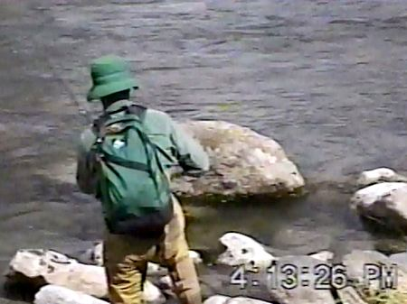
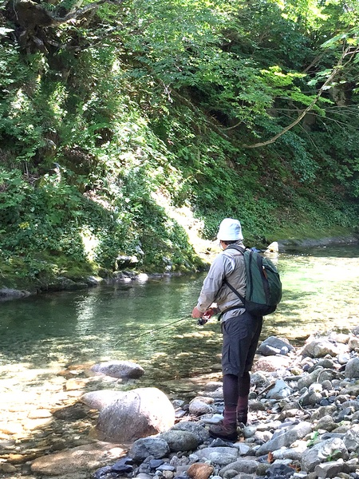
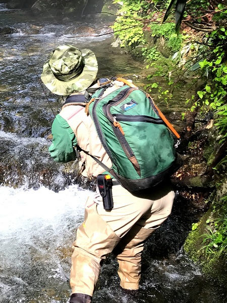
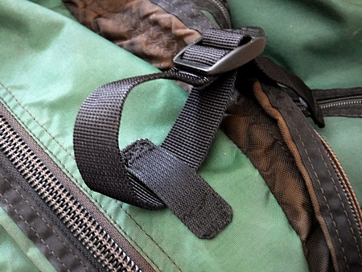
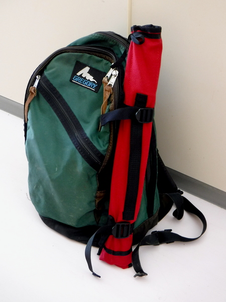
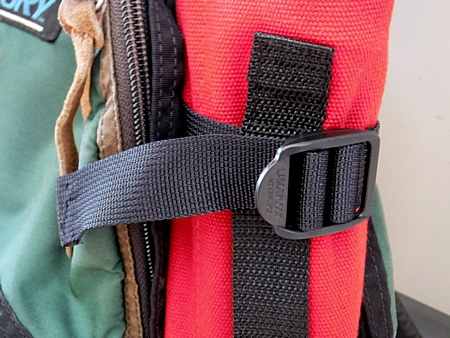

私のお気に入り
グレゴリーのデイパック 釣りの衣類
このグレゴリーのデイパックを買ったのはいつ頃だったのだろう？ 1997年のニュージーランド初釣行の時にはすでに使っていた。

翌1998年の友人とのNZ再釣行の際にも活躍してくれた。

おそらくは '90年代中頃に、豊橋市にある「モンタニア」という登山用品店で買ったと思われる。
これを買う前には、Lowe というブランドの、同じような暗緑色のデイパックを、大学から社会人数年目まで使っていた。特に Lowe が壊れたわけでもなかったのだが、いつか海外へ釣りに出かける時には丈夫なデイパックが欲しいなと考えて購入したのだろう。うろ覚えだが、当時、グレゴリーのデイパックは「デイパック界のロールスロイス」などというキャッチコピーで販売されており、お値段もかなりのものであった。
まぁ、'90年代半ばというのは、バブルは弾けていたものの、今の僕から見れば比べものにならないほどの高給を得ていたので、あのような買い物が出来たのである。（笑）
しかし、この頃では「ブランド」というものをあまり信用しなくなり、無頓着になってしまった。だが、このデイパックについては、値段相応の機能・耐久性・使いやすさを兼ね備えており、25年近く使い続けていることを思えば、良いものは買う時には高くても、結局は安くなるという見本かもしれない。
このデイパックの良いところは、
- 色：目立たない、品の良い暗緑色

渓流の風景に溶け込む品の良い暗緑色 - 各コンパートメントのデザイン
最も外側：斜めのファスナーで、小物・薄手の物が入る
外側：内側上部にメッシュの小物入れが設けられている。背負う側には二重の仕切りがあり、外側にはペン差し、内側には書類が入れられる。
内側：最も大きな容量で、かなりの物品を収納できる。 - クッション：背中に直接触れる面には、厚手のクッションパッドが縫い込まれており、背負った時の感触が良く、荷物の重さを軽減してくれる気がする。
- ショルダーベルト：こちらもクッションパッドが入っており、肩が痛くならない。ベルトに沿ってナイロンのテープが縫い付けられ、Dリングが１個ずつ装着されている。今のデイパックでは常識的な装備だが、両方のショルダーベルトを胸の位置で繋ぐベルトが付いている。やはり当然のデザインながら、ウェストベルトも装備されている。
感心するのは、それぞれのベルトを連結するプラスチックパーツが独自のデザインであり、正しい向きでないと嵌まらないようになっている。このため、ベルトがよじれたまま連結することが無い。 - ボトム：デイパックで最も損耗が激しいと思われる底面には、それ以外の箇所とは違う厚手のナイロン生地が用いられており、丈夫に出来ている。

補修と改良
最近は、さすがのグレゴリーのデイパックも、お歳を召されて少々くたびれてきた。
○内部のコンパートメントの縫い目がほつれ、仕切りの用を成さなくなってきた。百円ショップで、ナイロン生地のアイロンで熱圧着する補修布を買ってきて直したが、完全には直せなかったので、これから手縫いを試みる予定。
○手持ちのパックロッドは、ルアー・フライロッド共に、デイパックに仕舞うと若干頭が飛び出てしまっていた。そこで、デイパックの側面に、ケースに入れたパックロッドが固定できたら便利だな、と思い、ジャンクパーツの中から手頃なナイロンベルトとストラップ用プラスチックパーツ（Nifco 製）を使って、手作業で作ってみた。下部のパーツは足りなかったので、ホームセンターで買って来た。160円ほど。

デイパックのサイドにホルダーを作ってみた
高専に入学し、寮での生活が始まる時にお袋が持たせてくれた針箱を取り出し、１番長くて太い縫い針と、手芸用品店で買ってきた手縫い用のナイロン糸で、夜なべ仕事として独り夜更けに縫い上げる。剣道部でほつれた面の裏地や、破れた小手の皮を縫い付けたりしたことが思い出された。

まずまずの出来上がりとなり、最近新調した ABU のルアー用パックロッドを取り付けてみた。ベルトを締めればそれなりにしっかりと固定されるが、念のためにパックロッドの手持ちベルトに、デイパックのホルダーベルトを通してから締めるようにしてみた。

デイパックのホルダーベルトを通している
コロナウィルス流行次第では、９月にイワナ釣り遠征に行けるかもしれないので、その時にテストしてみます。
私のお気に入り 目次へ
サイトマップ
ホームへ
お問い合わせ